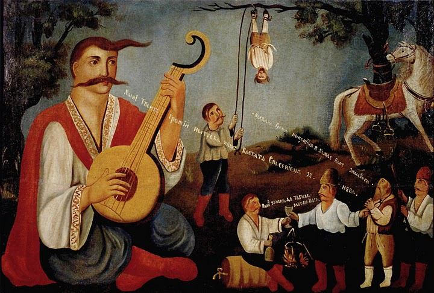

Українська музика починає відлік із IX століття нашої ери — часів становлення Русі — і у своєму розвитку охоплює переважно всі види музичного мистецтва — народну і професійну, академічну і популярну музику. Нині (2020-і) українська музика в її різноманітності звучить в Україні та далеко за межами, надалі розвивається в народній та професійній традиціях і є предметом вивчення науковців.
Українська народна музика
Початковий період розвитку
Музикальність та співучість є одними з характерних рис українців[2]. Музичні традиції на території сучасної України сягають прадавніх часів.
Вік знайдених київськими археологами поблизу с. Мізина (Чернігівська область) музичних інструментів — тріскачок з бивнів мамонта — оцінюють у 20 тисяч років. До того самого періоду зараховують флейти, знайдені на стоянці Молодове (Чернівецька область).
На фресках Софійського собору (XI століття) зображені музики, що грають на різних духових, ударних та струнних (подібних до арфи та лютні) інструментах, а також скоморохи, що танцюють. Ці фрески свідчать про жанрове розмаїття музичної культури Русі. До ХІІІ століття належать літописні згадки про співців Бояна та Митусу.
Загалом первісне музикування мало синкретичний характер — пісня, танець і поезія були злиті в нерозривній єдності. Найчастіше музичний супровід мали обряди й церемонії, ритуали, трудовий процес тощо. В уяві людей музика і музичні інструменти відігравали важливу роль оберегів під час заклинань і молитов магічно-охоронного значення.
У музиці люди вбачали захист від нечистої сили, поганого сну, від зурочення. Існували і спеціальні магічні награвання для забезпечення родючості ґрунту й плодовитості худоби.
У первісній грі починають виділятися солісти, заспівувачі; розвиваючись, диференціюються елементи музично виразної мови. Речитація на одному тоні ще без чіткої розміреності інтервальних ходів (низхідний глісандуючий рух первісної мелодії близькими, найчастіше, сусідніми звуками) призводить до поступового розширення звукового діапазону.
Закріплюються кварта і квінта як природні межі підвищення і зниження голосу, а тим самим як опорні для мелодії інтервали і заповнення їх проміжними (вузькими) ходами.
Цей процес, що відбувався в найдавніші часи, і був тим джерелом, з якого виникла народна музична культура. Він започаткував формування музичних систем, унаслідок своєрідності яких у подальших історичних умовах виникають національні прикмети музичної мови.
Народнопісенна творчість
Про становлення народної пісні, що існувала в найдавніші часи на теренах України, можна судити зі старовинних обрядових пісень. Багато з них є відбитком цільного світогляду часів первісної людини, що розкриває ставлення народу до природи та її явищ.
Самобутній національний стиль найбільш повно представлений піснями центрального Придніпров'я.
Їм властиві мелодична орнаментика, вокалізація голосних, лади — еолійський, іонійський, дорійський (нерідко хроматизований), міксолідійський.
Зв'язки з білоруським, і російським фольклором особливо яскраво виявляються у фольклорі Полісся.
На Прикарпатті й Карпатах розвинулися свої відмінні пісенні стилі. Їх визначають як гуцульський і лемківський діалекти.
Гуцульський фольклор відрізняється архаїчними рисами в мелосі й виконавській манері (інтонування, наближене до натуральному ладу, низхідні глісандо в закінченнях фраз, спів із вигуками, імпровізаційна мелізматика, силабічний речитатив), взаємодією вокального й інструментального начал, зв'язками з молдавським і румунським фольклором.
У ладовому відношенні гуцульському фольклору притаманний особливий — гуцульський лад, а також — еолійський, іонійський, та дорійський. Для лемківського діалекту характерні зв'язки з польською, угорською, словацькою пісенністю, що проявляються в гостро трепетливому синкопованому ритмі, переважанні мажору над мінором, пануванні силабічного речитативу.
Жанрове розмаїття української пісні
За своїм значенням у житті народу, за тематикою, сюжетом і музичними властивостями українська народна пісня поділяється на безліч різноманітних жанрів, що об'єднуються певною системою ознак. У цьому розумінні найтиповішими жанрами української пісні є:
- Календарно-обрядові — веснянки, щедрівки, гаївки, колядки, купальські, обжинкові та інші.
- Родинно-обрядові та побутові — весільні, жартівливі, танцювальні (в тому числі коломийки), частівки, колискові, поховальні, голосіння та інше.
- Кріпацького побуту — чумацькі, наймитські, бурлацькі тощо;
- Козацькі пісні
- Історичні пісні і думи
- Солдатського побуту — рекрутські, солдатські, стрілецькі;
- Ліричні пісні та балади.
Думи та історичні пісні
У XV–XVI століттях історичні думи та пісні стають одним із найяскравіших явищ української народної музики, своєрідним символом національної історії та культури. Як зазначав арабський мандрівник Павло Алепський (мемуарист, син Антіохійського патріарха), який у 1654 і 1656 роках побував в Україні:
Спів козаків тішить душу і зцілює від журби, бо їх наспів приємний, йде від серця і виконується мовби з одних вуст; вони пристрасно люблять нотний спів, ніжні і солодкі мелодії».
Безпосереднім джерелом, з якого розвинулися думи, стала традиція історичних та величальних пісень, що були дуже поширені ще в умовах князівського побуту Київської держави. У них звичайно прославляли князів, походи та інші історичні події.
Так, ще в XI столітті співали князям Мстиславу, Ярославу та іншим — «славослів'я» (возвеличення). У літописах міститься багато вказівок також на виконання різних історичних оповідей про походи «на греки і хозари», про «свари і бійки князів» тощо.
Творцями і виконавцями історичних пісень та дум, псалмів, кантів називали кобзарями. Вони грали на кобзах чи бандурах, які стали елементом національного героїчно-патріотичного епосу, волелюбної вдачі і чистоти моральних помислів народу.
Величезна увага в думах приділена боротьбі з турецькими набігами та перебуванню в полоні; до «татарського» циклу відносяться такі відомі думи, як «Про Самійла Кішку», «Про трьох братів Азовських», «Буря на Чорному морі», «Маруся Богуславка» та інші.
З початком Народно-визвольної війни 1648—1654 років сюжетом дум часто ставала національно-визвольна боротьба; велике місце приділене народним героям — Нечаєві, Кривоносові, Хмельницькому.
У часи московської експансії українських земель з'являються думи про шведчину, про Січ та її руйнування, про канальські роботи, гайдамаччину, панщину і про волю.
Уже в XIV–XVII та XVIII століттях українські музиканти уславилися за межами України. Їхні імена можна знайти в літописах тих часів серед придворних музикантів, зокрема при дворі польських королів чи російських імператорів.[6] Найвидатніші давні кобзарі — Тимофій Білоградський (відомий лютнист, 18 ст.), Андрій Шут (19 ст.), Остап Вересай (19 ст.) та інші.
З метою захистити своє мистецтво вони об'єднувалися в братства, співацькі цехи, які мали свої статути. Особливого розвитку ці братства досягають у XVII–XVIII століттях, продовжуючи існувати навіть і на початку XX століття до жорстокого знищення радянською владою.
Інструментальний фольклор та народні інструменти
Важливе місце в українській музичній культурі займає інструментальний фольклор. Музичний інструментарій України вельми багатий і різноманітний та охоплює духові, струнні та ударні інструменти.
Значна частина українських народних музичних інструментів сягають часів Русі, інші інструменті (наприклад, скрипка) прийнялися на українському ґрунті пізніше, проте набули своїх виконавських традицій і особливостей.
Найдавніші пласти українського інструментального фольклору пов'язані з календарними святами та обрядами, які супроводжувалися маршовою (марші до ходи, вітальні марші) і танцювальною музикою (гопачки, козачки, коломийки, полечки, вальси, голубки, аркани тощо) і пісенно-інструментальною музикою для слухання.
Традиційні інструментальні ансамблі частіше за все були трійками з різних інструментів, наприклад, скрипки, сопілки та бубна (так звана троїста музика). Виконання музики передбачає також певну частину імпровізації.
Широкою сферою побутування самобутнього музичного інструментарію є пастуші (вівчарські) награвання, де, як правило, використовуються інструменти, виготовлені самими музиками: сопілка, флояра, дводенцівка, теленка, цугфлейта, ріг, трембіта, кора, луска, кувиці (свиріль), дуда, свистунці, дримба та ін.
Під час молитов у побутових умовах (в хаті, на вулиці, біля церкви) для акомпанементу до кантів, псалмів часто використовували колісну ліру, кобзу та бандуру.
У часи Запорозької Січі в оркестрах Війська Запорозького звучали литаври, барабани, козацькі сурми і труби, причому литаври входили до числа клейнодів Запорозької Січі, тобто до числа священних символів державності України.
Інструментальна музика стала і невід'ємною частиною міської культури. Крім загальнонаціональних інструментів, як-от скрипки, бандури, міська культура представлена такими інструментами, як столоподібні гусла, цитру, торбан. Під їхній акомпанемент співали величальні пісні, міські пісні й романси, релігійні піснеспіви.
Український фольклор у творчості професійних та аматорських колективів
У XX столітті до українського фольклору звертались численні професійні та аматорські колективи України, створювались ансамблі також і в емігрантських колах закордонних країн. Визначною стала особливість представлення фольклорних традицій у формах академічного музикування.
Так, на початку XX століття український ансамбль етнічної музики на чолі з Павлом Гуменюком з Філадельфії здобув популярність у Сполучених Штатах. Українські традиції були зберігаються у творчості таких українсько-американських музикантів з Нью-Йорка, Клівленда, Детройта, як Зіновій Штокалко, Григорій Китастий, Юліян Китастий, Віктор Мішалов та інші.
В УРСР протягом століття було створено чимало колективів, що спеціалізувалися на виконаннях обробок українських народних пісень і танців, а також творах українських композиторів у подібній стилістиці — це українські оркестри народних інструментів, ансамблі пісні і танцю, народні хори тощо.
Так, 1922 року був організований Перший оркестр українських народних інструментів, 1939 — Гуцульський ансамбль пісні і танцю 1943 — народний хор Верьовки, 1951 — Ансамбль танцю України.
Українська народна пісня лягла в основу творів багатьох українських композиторів. Найвідоміші обробки українських пісень належать Миколі Лисенку та Миколі Леонтовичу, значний внесок у дослідження та збирання народної творчості внесли вітчизняні фольклористи — Філарет Колесса та Климент Квітка.
З 1980-х років спостерігається зростання інтересу до автентичних форм народного музикування. Першопроходцями цього напрямку вважається заснований 1979 року гурт «Древо», очолюваний професором Київської консерваторії Є. Єфремовим.
У 2000-ні роки в Україні виникають такі фестивалі етнічної музики Країна мрій та Шешори, де народна музика звучить як в автентичному виконанні, так і у різноманітних обробках у рок- чи поп-напрямків.
Серед сучасних гуртів автентичного співу «Божичі», «Володар», «Буття», етнічні мотиви використовують гурти «Тартак», «Воплі Відоплясова», «Мандри», «Гайдамаки», «Очеретяний кіт», оригінальне нашарування етнічних елементів пропонує гурт «ДахаБраха».
Становлення класичної музики
Про професійне музичне мистецтво східнослов'янських племен існують відомості з часів Русі. З прийняттям християнства у кінці X століття на теренах України з'являється церковний спів, що формувався під впливом візантійської церковної та української народної музики. Найдавніші зразки давньовізантійської екфонетичної нотації виявлено в Остромировому Євангелії (1056-1057).
У XII—XVII столітті в православних церквах поширився одноголосний «знаменний спів» що отримав свою назву відповідно до знаменної нотації, що мав значний вплив і на творчість композиторів пізнішої епохи.
XVII — XVIII століття
В епоху бароко, на зміну одноголосному знаменному співу приходить багатоголосний партесний спів, що сприяв розвитку мажоро-мінорної системи і на основі якого розвинувся духовний концерт.
Серед видатних музичних діячів цього часу — Микола Дилецький, автор «Мусикійської граматики» (1675) — першої музично-теоретичної праці, де пояснюється суть нової нотної системи, теорія партесного співу та партесної композиції.
Серед сучасників Миколи Дилецького відомим українським композитором був також Симеон Пекалицький, що працював у Львові та Москві. Серед київських композиторів-партесників першої половини XVIII століття відомими були Іван Домарацький та Герман Левицький.
Партесний стиль як стиль епохи проіснував приблизно до середини XVIII століття, коли йому на зміну прийшов класицистичний жанр хорового концерту у творчості Максима Березовського, Дмитра Бортнянського, Артемія Веделя та інших композиторів другої половини XVIII — початку XIX століття.
Важливою подією цього часу стало відкриття у 1632 році Києво-Могилянської академії, де викладались також і музичні предмети. Її вихованці популяризували вертеп, а пізніше — канти. Серед випускників Академії — багато українських митців, зокрема Григорій Сковорода, Артемій Ведель.
Світська професійна вокальна і інструментальна музика, що існувала в поміщицьких маєтках, військових частинах, з 17 століття розвивається в містах. Створюються музикантські цехи, при магістратах — оркестри, капели.
На основі народнопісенних і кантових традицій в 18 — початку 19 ст. поширюється пісня-романс на вірші різних поетів. Один із перших її авторів — Григорій Сковорода ввів у пісенний жанр цивільну, філософську й ліричну тематику.
Надзвичайно важливе значення в українській музичній культурі XVIII століття відіграла створена з ініціативи гетьмана Данила Апостола 1730 року Глухівська співоча школа, вихованцями якої стали Дмитро Бортнянський, Максим Березовський та Артемій Ведель.
Після закінчення Глухівської школи Бортнянський та Березовський продовжували своє навчання в італійських музичних школах, що були центрами тогочасної європейської музики.
Поєднання традицій партесного співу і сучасних технік європейського письма обумовило унікальність творчості цих композиторів.
Ставши придворним капельмейстером у Петербурзі, а з 1796 року — керівником придворної капели, складеної майже винятково з вихованців Глухівської співацької школи, Бортнянський значно вплинув і на розвиток російської музичної культури.
Він був також першим композитором у Російській імперії, музичні твори якого почали виходити друком.
XIX — початок XX століття
XIX століття в історії музики визначається виходом на світову арену багатьох національних шкіл, що пов'язано з ростом національної свідомості європейських народів, що знаходилися під владою імперій. Слід за польською та російською постає й українська національна композиторська школа.
За прикладом українських письменників та поетів, професійні музиканти XIX ст. почали звертатися до народної тематики, обробляти народні пісні, які виконувалися талановитими аматорами у супроводі народних інструментів — кобзи, бандури, цимбал, скрипки, ліри та ін.
На початку 19 століття в українській музиці з'являються перші симфонічні твори та камерно-інструментальні твори, серед їхніх авторів — Іван Вітковський, А. І. Галенковський, Ілля та Олександр Лизогуби.
Діяльність аматорських і відкриття перших професійних театрів (Київ — 1803, Одеса — 1810), у яких ставилися музично-сценічні твори на національні сюжети, зіграли важливу роль у становленні української опери, першою з яких вважається «Запорожець за Дунаєм» Гулака-Артемовського (1863).
На заході України в різних жанрах хорової та інструментальної (в тому числі симфонічної) музики працювали композитори Михайло Вербицький, Сидір Воробкевич, В. Г. Матюк (хори й ін.).
Основоположною для розвитку національної професійної музики стала різнобічна діяльність Миколи Лисенка, який створив класичні зразки творів у різних жанрах (зокрема 9 опер, фортепіанна й інструментальна музика, хорова і вокальна музика, переважно на слова українських поетів, у тому числі Т. Шевченка).
Він же став організатором музичної школи в Києві (1904; з 1918 — Державний музично-драматичний інститут імені Миколи Лисенка).
Послідовниками творчих принципів Лисенка стали Микола Аркас, Борис Підгорецький, Михайло Колачевський, Володимир Сокальський, Павло Сениця, Іван Рачинський, Кирило Стеценко, Яків Степовий, Микола Леонтович, Денис Січинський, Ярослав Лопатинський, Станіслав Людкевич, Остап Нижанківський та інші композитори.
Широке поширення одержує хоровий рух, виникають хорові товариства «Торбан» (1870) і «Боян» (1891). Відкриваються вищі оперні театри у Києві (1867) та Львові (1900), Вищий музичний інститут у Львові, музичні школи при Російському музичному товаристві у Києві (1868), Харкові (1883), Одесі (1897) та інших містах.
Інтерес до української тематики та фольклору проявили і композитори, що працювали за межами України. Слід відзначити творчість російського композитора Пьотра Чайковського.
Українські мелодії використані композитором у ряді творів, зокрема у Другій симфонії та Концерті для фортепіано з оркестром № 1, ряд творів написано на українські сюжети, зокрема опери «Мазепа» і «Черевички».
Українська тематика присутня і в творчості Михайла Глінки, Олександра Аляб'єва, Модеста Мусоргського, також у творчості Ференца Ліста, що мандрував Україною в кінці 1840-х — це п'єси для фортепіано «Українська балада» і «Думка», а також симфонічна поема «Мазепа».
Українські коріння має також Ігор Стравинський, значна частина його ранніх творів була написана в Устилузі на Волині.
На початку XX століття всесвітню славу здобули плеяда українських виконавців. Це — співачка Соломія Крушельницька, Оксана Петрусенко, Зоя Гайдай, Марія Литвиненко-Вольгемут, співаки Модест Менцинський, Олександр Мишуга, Іван Паторжинський, Борис Гмиря піаніст Володимир Горовиць, хоровий диригент Олександр Кошиць, за межами України стали відомі хорові обробки Миколи Леонтовича.
Початок звукозапису
Перші грамплатівки зі співом українською мовою були випущені у 1899 році фірмою «Еміль Берлінер» в Лондоні. Записи зроблені під час гастролей російського хору С. Медвєдєвої.
Один запис мав назву «Чорнохмари», ймовірно, це був дует Оксани і Андрія з опери «Запорожець за Дунаєм», інша платівка — пісня «Сонце низенько».
На теперішній час ці записи невідомі. У 1900 році «Еміль Берлінер» записав ще сім українських платівок. У Львові у 1904—1905 роках зроблено записи українських пісень у виконанні Г. А. Крушельницької, а у 1909 році — Ф. М. Лопатинської.[9]
У 1908—1909 роках Лесею Українкою була організована етнографічна експедиція по Лівобережжю, до складу якої увійшли Ф. М. Колесса, О. Г. Сластіон та О. І. Бородай.
Під час експедиції зроблені записи на фонограф пісень та дум у виконанні народних кобзарів. До 100-річчя Лесі Українки у 1971 році ці записи були відреставровані та випущені у вигляді платівки «Леся Українка з думою і піснею народа», на якій є й голос самої поетеси.
В Києві у 1909—1911 роках працювала студія звукозапису «Інтернаціональ Екстра-Рекорд», серед перших записів якої (липень 1909) був П. І. Цесевич, імовірно й інші українські виконавці (каталоги студії не збереглися).
Особливо цікаві 11 записів сопрано О. Д. Петляш у фортепіанному супроводі М. В. Лисенка. Три платівки з цієї серії були знайдені та нині знаходяться у фондах будинку-музею М. В. Лисенка, на них записані пісні «Ґандзя» — «Лугом іду, коня веду», «Віють вітри» — «Карі очі» та «Ой казала мені мати» — «Не вернувся з походу». У Києві працювала тільки студія, а виготовлялися ці платівки в Берліні.
З 1911 року в Києві працювала фірма грамзапису «Екстрафон», яка вперше на території України почала виготовляти грамплатівки на місці. Першими українськими платівками, виготовленими в Києві були записи хору М. А. Надєждинського з піснями «Гуляв чумак на риночку», «Ой, летіла горлиця», ²Ой, ходила дівчина, «Закувала та сива зозуля» та іншими, усього 7 пісень; тенору І. Є. Гриценко — «Сонце низенько», «У гаю, гаю» на слова Т. Г. Шевченка, « Дивлюсь я на небо та інші», усього 6 пісень; 6 пісень О. Д. Петляш. Ці записи зроблені були раніше, студією «Інтернаціональ Екстра-Рекорд».
У 1912 році «Екстрафоном» випущені 10 українських пісень у виконанні хору Я. А. Шкредковського та Н. Нємчинова, 11 — у виконанні квартету Б. П. Гірняка; у 1914 році, до ювілею Т. Г. Шевченка — платівки з піснями на слова поета у виконанні Цесевича, Гриценка, Карлашова, Петляш та хору Надєждинського. Записані були такі твори, як «Реве та стогне Дніпр широкий…», «І широку долину…», «Якби мені черевички», «Огні горять, музика грає», «Тече вода в синє море», «Минали літа молодії».
Музична культура Української Держави
Після проголошення незалежності України 1918 року, з'явилася низка художніх колективів. Зростання творчої активності нового покоління українських митців і розквіт таланту вже знаних діячів, припадає на часи Визвольних змагань.
Уряд Української Держави відіграв важливу роль на ниві культурної розбудови, зокрема й у галузі музичного мистецтва, про що свідчить Постанова Ради міністрів стосовно призбирування літературних, наукових, артистичних і технічних сил України.
Зокрема універсалом Павла Скоропадського 1918 року було засновано Державний симфонічний оркестр України, першим диригентом якого став Олександр Горілий, Українську державну капелу, Перший і Другий Національні хори.
Київський оперний театр, що раніше діяв під патронажем Російського музичного товариства, був названий Українським театром драми та опери, значну кількість всесвітньовідомих опер було перекладено українською мовою.[12] Також 1918 року було засновано Кобзарський хор, що згодом буде відроджений як Державна капела бандуристів.
Українська музика радянського періоду
Прихід радянської влади на терени України ознаменувався низкою трагічних подій. 1921 року агентом ВЧК був вбитий Микола Леонтович, а 1928 року було заборонено діяльність товариства його пам'яті.
Найстрашніших утрат українське мистецтво зазнало у 1930-ті роки, протягом яких радянською владою було знищено кілька сотень бандуристів, кобзарів і лірників, а 1938 року слід за іншими митцями «розстріляного відродження» були розстріляні — музикант і етнограф Гнат Хоткевич, композитор, диригент і хореограф, перший теоретик українського народного танцю Василь Верховинець.
Композитор Павло Сениця був звинувачений в українському націоналізмі. Було заборонено виконання і видання його творів на цілі десятиліття. Композитори Василь Барвінський та Всеволод Задерацький пройшли через концтабори, а їх твори були публічно знищені.
Загинув у концтаборі композитор, мистецтвознавець, диригент і педагог Борис Кудрик. На багато десятиліть була заборонена до вивчення і популяризації музика українських композиторів, що назавжди виїхали з СРСР (Федір Якименко, Сергій Борткевич, Зіновій Лисько, Антін Рудницький, Роман Придаткевич, Роман Сімович, Роман Савицький, Стефанія Туркевич тощо).
У той же час радянською владою було відкрито ряд музичних установ у різних містах України. Зокрема, це театри опери і балету в Харкові (1925), Полтаві (1928), Вінниці (1929), Дніпропетровську (1931), Донецьку (1941), організовано хорові, симфонічні колективи.
Постановою ЦК ВКП(б) від 23 квітня 1932 року «Про перебудову літературно — художніх організацій» було організовано Спілку радянських музик України (згодом — «спілка композиторів»), на яку покладались функції ідеологічного контролю за творчістю композиторів.
1930-ті — 1950-ті роки
Починаючи з другої половини 1930-х років музичне мистецтво радянської України розвивалося переважно у руслі соцреалізму, що став єдиним офіційно дозволеним в СРСР «творчим методом» літератури і мистецтва, тоді як митці, що відходили від цього методу піддавались жорсткій критиці й переслідуванням.
Зокрема нещадній критиці на пленумах Спілки композиторів піддавалися твори Б. Лятошинського і Л. Ревуцького, причому останній після 1934 року практично припинив творчу діяльність, обмежившись викладацькою та редакторською роботою.
У той же час в Україні виникає масова радянська пісня, одним із перших творців якої став К. Є. Богуславський. У 1930-ті роки з'являються перші опери радянської тематики, зокрема «Щорс» Б. Лятошинського (1930), «Перекоп» Ю. Мейтуса (1937). Пісні, присвячені комуністичній партії та її вождям закріплюються у репертуарах професійних та аматорських колективів.
Вільною від комуністичного диктату до 1939 року лишалось лише музичне мистецтво західної частини України, що до 1939 року входила до складу Польщі. На заході України працювали композитори В. А. Барвінський, С. Ф. Людкевич, А. І. Кос-Анатольський, фольклорист Ф. М. Колесса.
У повоєнні часи серед видних українських композиторів — Григорій Верьовка, брати Георгій та Платон Майбороди, Костянтин Данькевич, А. Я. Штогаренко та інші. Серед визначних виконавців — український тенор Іван Козловський, широко відомою завдяки виконанню фронтових пісень стала уродженка Харківщини Клавдія Шульженко.
1960-ті — 1980-ті роки
1960-ті роки відзначаються проривом української композиторської школи на світову арену, опануванням новітніх течій європейської музичної культури. У Києві створюється група митців «Київський авангард», до якої увійшли композитори, як Валентин Сильвестров, Леонід Грабовський, Віталій Годзяцький, Володимир Губа.
Центральною фігурою в цій групі був диригент Ігор Блажков. Внаслідок розходження з ретроградними тенденціями офіційних музичних кіл СРСР Члени «Київського авангарду» зазнавали різного роду утисків. В подальшому кожен із композиторів пішов своїм шляхом у мистецтві, а неформальна група розпалася.
У ці ж роки продовжують працювати композитори Платон і Георгій Майбороди, К. Данькевич, на цей період припадають останні дві симфонії Б. Лятошинського. У 1970-ті — 1980-ті роки стають відомими композитори, що розширили традиційну для української музики пізньоромантичну стилістику завдяки новітнім способам європейського модернізму — М. Скорик, Є. Станкович, І. Карабиць, В. Бібік та інші.
Світове визнання отримала національна школа вокального мистецтва. Яскраві імена української оперної сцени — А. Солов'яненко, Д. Гнатюк, Б. Руденко, Є. Мірошниченко. Визначною подією музичного життя стала постановка опери Д. Шостаковича «Катерина Ізмайлова» у Києві 1965 року.
Паралельно із формуванням поп-музики в Західних країнах, в Україні, як і інших радянських республіках досягає свого розквіту радянська естрада. Особливо виділяється творчість Володимира Івасюка, автора понад 100 пісень, чиє життя трагічно обірвалось 1979 року.
Серед композиторів-піснярів цих років також О. І. Білаш, В. Верменич, пізніше — І. Карабиць. Популярність завоювали естрадні виконавці — Софія Ротару, Назарій Яремчук, Василь Зінкевич, Ігор Білозір, Тарас Петриненко, Алла Кудлай та інші.
Паралельно започатковувалися і типово модерні музичні та музично-поетичні проєкти, серед яких сатиричний театр «Не журись!» В. Морозова, гурт «Мертвий півень» та рок-бардівська група «Плач Єремії» (друга половина 1980-х рр.).
Сучасна музика
Освітні та концертні установи
В Україні історично склалася система освітніх і концертних музичних організацій, значна частина яких перебувають у віданні Міністерства культури і туризму, інші — у віданні місцевих адміністрацій. Зокрема, це:
Театри
- оперні театри у Києві, Харкові, Львові, Одесі, Дніпрі, Донецьку[13]
- театри музичної комедії в Харкові та Одесі, а також театр оперети в Києві
- Муніципальний оперний театр у Києві
- музично-драматичний театр «Дах»
Концертні установи
- Національна філармонія та філармонії в усіх обласних центрах України,
- Будинки органної та камерної музики у Києві, Дніпрі, Білій Церкві, Львові, та Харкові
- алаци та будинки культури в багатьох містах України.
Освітні музичні заклади
Підготовку фахових музикантів проводять:
- Консерваторії (музичні академії) в Києві, Харкові, Одесі, Львові, Донецьку[13], Дніпрі
- Музичні факультети у Харківському університеті мистецтв та Київському університеті культури
- Музичні училища в різних містах України
Концертні колективи

Станом на 2008 рік в Україні діють 9 національних і 3 державних колективи. З них 11 базуються у Києві, один — в Житомирі та в Одесі:
- Національний симфонічний оркестр України
- Національний одеський філармонійний оркестр
- Національна заслужена академічна капела України «Думка»
- Академічна хорова капела «Орея»
- Національний заслужений академічний український народний хор ім. Григорія Верьовки
- Національна заслужена капела бандуристів України ім. Г. І. Майбороди
- Національний ансамбль солістів «Київська камерата»
- Національний заслужений академічний ансамбль танцю України ім. П. П. Вірського
- Національний оркестр народних інструментів України
- Національний академічний духовий оркестр України
- Державна академічна чоловіча хорова капела України ім. Ревуцького
- Державний естрадно-симфонічний оркестр України
- Державний камерний ансамбль «Київські солісти»
Окрім того, діє багато муніципальних колективів, колективів при обласних філармоніях, будинках органної та камерної музики тощо.
Музичні спілки
Дві творчі спілки музичного профілю станом на 2008 рік мають національний статус. Це:
- Національна спілка композиторів України
- Національна всеукраїнська музична спілка
- Національна ліга українських композиторів
Сучасна академічна музика

Значна кількість сучасних українських композиторів є членами Національної спілки композиторів, серед них — 17 народних артистів України, 54 заслужених діяча мистецтв України, 16 лауреатів Національної премії України імені Тараса Шевченка, 6 академіків та 3 члена-кореспондента Академії мистецтв України, 35 докторів наук, 59 професорів тощо.
За особливі досягнення 10 митців нагороджені Відзнакою Президента України Орденом «За заслуги» ІІІ ступеня, 1 — орденом Ярослава Мудрого, 1 — орденом княгині Ольги.
Твори сучасних українських композиторів виконуються головним чином на фестивалях «Київ Музик Фест», «Прем'єри сезону», «Форум музики молодих» (Київ), «Два дні й дві ночі нової музики» (Одеса), «Контрасти» (Львів) та «Дніпровські зорі» (Дніпропетровськ), а також у концертах серії Володимира Рунчака Нова музика в Україні.
У 2009 диригент Роман Кофман започаткував концертну серію «Український авангард» (щорічні концерти Київського камерного оркестру із творами молодих і середнього віку композиторів). У театральному репертуарі — опери «Мойсей» М. Скорика, «Лісова пісня» В. Кирейка та «Палата № 6» В. Зубицького, балет «Різдвяна ніч» Є. Станковича, ряд балетів О. Костіна.
Репертуар хорових колективів поповнюється творами Л. Дичко та Г. Гаврилець, інструменталістів — творами Жанни та Левка Колодубів, В. Рунчака тощо. Класична електронна музика представлена композиціями Алли Загайкевич, Івана Небесного та інших.
Історичні традиції продовжують сучасні оперні співаки України — Вікторія Лук'янець, Володимир Гришко, Валентин Пивоваров, Роман Майборода, Тарас Штонда, Михайло Дідик, Марія Стефюк, Стефан П'ятничко.
В Україні також проводяться численні міжнародні музичні конкурси виконавців-інструменталістів фортепіанні — пам'яті В. Горовиця, диригентів — ім. С. Турчака, хорових колективів — ім. М. Леонтовича, співаків — ім. Соломії Крушельницької, бандуристів — ім. Гната Хоткевича, багатопрофільний конкурс імені М. Лисенка та інші.
Популярна музика
На сучасній українській сцені представлені майже всі музичні напрямки: від фолку до acid джазу. Жваво розвивається клубна культура.
Популярність багатьох українських поп-виконавців — Софії Ротару, Ірини Білик, Олександра Пономарьова, Тіни Кароль, ВІА Гра, Вєрки Сердючки, Світлани Лободи, Ані Лорак, Христини Соловій, Kazka (перший україномовний гурт, що потрапив у топ-10 до всесвітньовідомого чарту SHAZAM, до того-ж відеокліп «Плакала» транслювали міжнародні канали MTV Live HD та MTV Hits, а це 45 країн охоплення), Go-A — давно перетнула кордони України і утвердилася в країнах СНД і світових чартах. Популярна музика представлена на фестивалях «Червона рута», «Таврійські ігри», «Чайка» та інших.
Виконавці з України гідно представляли державу на конкурсах Євробачення, зокрема Руслана, яка залучила до власної музики фольклорні мотиви карпатського регіону, та першою з українських співаків, стала переможницею конкурсу Євробачення-2004 виборовши для України право на проведення наступного конкурсу — Євробачення-2005.
На Євробаченні-2007 та Євробаченні-2008 відзначилися, відповідно Вєрка Сердючка та Ані Лорак, посівши другі місця. Злата Огнєвіч з Євробачення-2013 привезла до України третє місце. 2016 року, переможницею Євробачення стала співачка Джамала, тому у 2017 Євробачення знову пройшло в Україні.
2021 року на Євробаченні, вперше в історії конкурсу, гурт Go-A виступив з українською народною піснею Шум в обробці і за голосами глядачів, посів друге місце, а згодом деякий час очолював з нею рейтинг музичного інтернет-сервісу Spotify.
Втретє — європейський пісенний конкурс Євробачення-2022, виграв для України з україномовною авторською піснею «Стефанія», гурт Kalush Orchestra 14 травня (під час війни, розв'язаної Російською Федерацією).
Поруч із тим розвивається українська рок-музика. Серед найвідоміших гуртів — «Океан Ельзи», «Воплі Відоплясова», «Танок на майдані Конго», «Крихітка», «Скрябін», «Тартак», «Плач Єремії», «Кому Вниз», «Мертвий півень», «Веремій», «Один в каное», The Hardkiss, Карна. Час від часу, проводяться українські рок-фестивалі «Рок-екзистенція», «Тарас Бульба» та інші.
Український реп виконують alyona alyona, YARMAK, Kalush тощо.
Серед музичних гуртів здобувають популярність суто вокальні ансамблі, як-от «Піккардійська терція» та «Менсаунд».
Представлено в Україні також і мистецтво джазу: Євшан Зілля, Freedom Jazz, Cherkasy Jazz Quintet та інші — міжнародні фестивалі джазової музики проходять у різних містах країни, серед найвідоміших — Jazz Bez та Jazz Koktebel. Значний внесок у популяризацію джазового руху в Україні зробили Володимир Симоненко та Олексій Коган.
Тенденція до використання фольклору сучасними українськими музикантами стає дедалі виразнішою. Одним із перших почав використовувати народні мотиви у рок-музиці у другій половині 1980-х рр. уже легендарний гурт «Воплі Відоплясова».
Спираючись на фольклорне підґрунтя, нову самобутню українську музику творять «Скрябін», «Мандри», «Гайдамаки», Тарас Чубай, Марійка Бурмака та багато інших виконавців.
Свідченням росту інтересу до фольклору стало започаткування в Україні двох фестивалів етнічної музики — «Країна мрій» у Києві та «Шешори» на Івано-Франківщині. Фольктроніку розвивають Катя Chilly, ONUKA, Go-A тощо.
Андеґраунд
Український рейв з’явився та оформився у щось конкретне наприкінці 90-х і виріс до міжнародного рівня за останні роки. Вже 2007-го, з'явився мем про «Київ — новий Берлін», стосовно нічного культурного життя. Вечірки у Києві були надзвичайно концептуальними: з музичної точки зору головний наголос робився на дуже популярні у той час жанри хауз і транс. Але вистачало там і більш екзотичної, витонченої музики: рідкісного електро, яке крутили зі справжніх вінілових платівок, джанглу, олдскульного хіп-хопу.[16]
З вітчизняного андеґраунду найбільшого поширення набув український блек-метал. До 2014-го, на півострові Крим, майже 20 років царювала «республіка щастя» під чарівною назвою «КаZантип» — фестиваль танцювальної електронної музики просто неба.[17]
Закордонні ЗМІ про український рейв:
- Знаменний допис The Calvert Journal про техно-рейв «Схема» 2015 року. Саме з нього почалась хвиля міжнародного інтересу.
- Британський журнал i-d — культове видання про молодіжну культуру, 2016 року створив документальну стрічку «Досліджуючи українську революцію андеґраундного рейву».
- «Бідні, але круті»: 2017 року у журналі Political Critique, було оприлюднене дослідження українського постреволюційного рейву. 2020 року, у престижному англійському виданні The Guardian, вийшла стаття про феномен артцентру Closer.
Видавнича справа
В 1990-ті — 2000-ні роки видання й розповсюдження нотно-музичної літератури в Україні переживає скрутні часи. Так, якщо в УРСР обсяг продукції музичного видавництва «Музична Україна» становив від 220 до 280 назв на рік, то на кінець 1990-х впав до однієї-двох, а часом і жодної книжки на рік. Фактично згорнули випуск нотної продукції інші державні видавництва.
Суттєво не змінили ситуацію на національному нотному ринку й приватні видавництва, які, через традиційну малотиражність (а отже й фінансову збитковість) нотних видань, друкують лише нотну літературу на замовлення або коштом авторів. У Києві з двох спеціалізованих музичних книгарень не залишилося жодної, а на нотних полицях великих книгарень переважають дидактичні видання, розраховані здебільшого на дітей і аматорів.
На думку експертів[22] така ситуація пов'язана з несприятливим податковим режимом, відсутністю дієвих протекціоністських заходів, та падінням платоспроможного попиту.
Лейбли
У кінці 1990-х — на початку 2000-х в Україні було створено низку музичних лейблів, зокрема Gallicia Distribution (Львів), JRC, Lavina Music, Moon Records та Nexsound (Київ), Metal Scrap Production (Тернопіль), OMS Records (Житомир), Wolf song production (Дніпропетровськ) та інші.
Конкуренцію українським лейблам на вітчизняному ринку становлять основні гравці світового аудіоринку — мейджори Universal, EMI, Sony/BMG, Warner. 2005 року український ринок музичних носіїв становив близько 10 мільйонів ліцензованих дисків і касет, боротьба з піратством призвела до їх зменшення на українському ринку до 40 % (у країнах Європи їхня частка не перевищує 10—15 %).